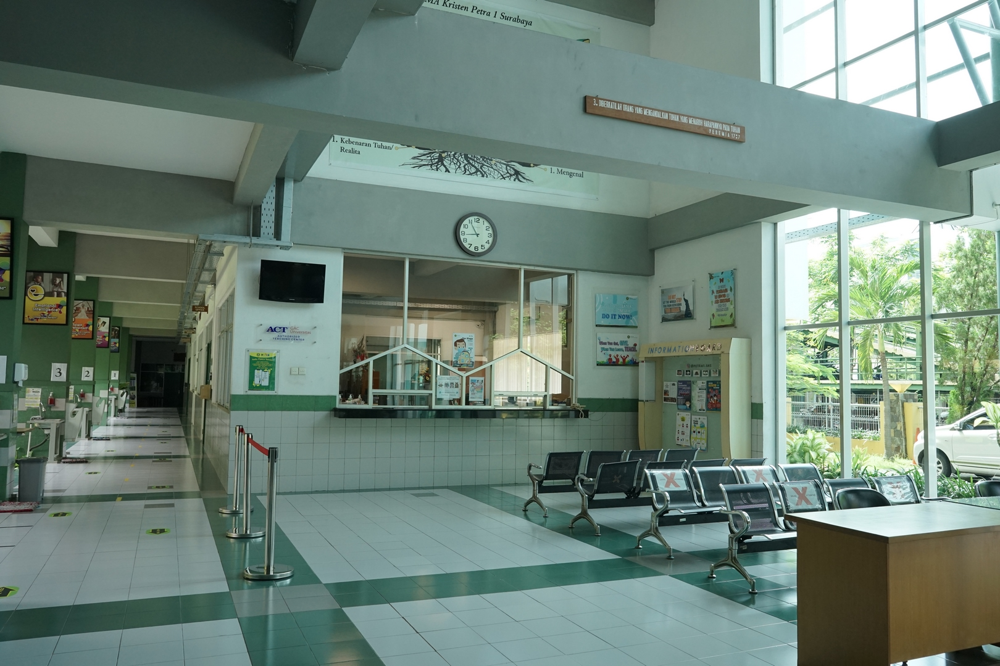

Selamat datang di portal resmi SMA Kristen Peta 1. Kami senantiasa berupaya menyediakan lingkungan belajar yang kondusif, berpusat pada pengembangan karakter dan kompetensi akademik siswa untuk menghadapi tantangan masa depan.
Menjadi sekolah menengah atas yang unggul dalam ilmu pengetahuan, berkarakter mulia, dan berlandaskan nilai-nilai kristiani.